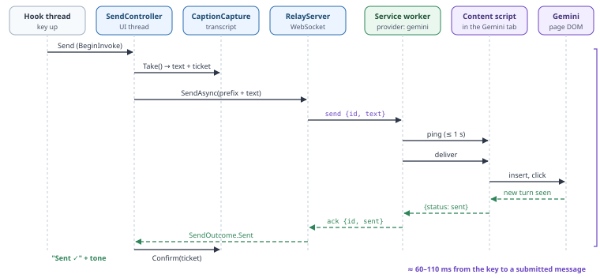

تا اینجا قطعهها را جدا دیدیم. این فصل همه را کنار هم میگذارد: از لحظهای که کلید رها میشود تا وقتی نشانگر
Sent ✓ نشان میدهد. کل مسیر در حالت عادی ۶۰ تا ۱۱۰ میلیثانیه طول میکشد.

کلاس SendController «سیاست» ارسال را در یک جا جمع میکند و خودش هیچ چیزی دربارهی WebSocket یا Gemini
نمیداند؛ فقط با CaptionCapture و اینترفیس IMessageSender کار میکند. مسئولیتهایش:
prefix) و تبدیل هر نتیجه به عملی روی ticket و یک پیام برای نشانگر.| نتیجه | با ticket چه میشود | نشانگر |
|---|---|---|
ارسال شد (sent) | قطعی (Confirm) | پیام Sent ✓ و یک صدای کوتاه |
در صف (queued) | منتظر پیام result | پیام Queued و برچسب · queued تا تحویل |
خطا (error) | بازگشت (Restore) | پیام Error: بهاضافهی جزئیات، مثلاً input not found |
| بیجواب در ۳ ثانیه | بازگشت (Restore) | پیام No response |
| افزونه وصل نیست | بازگشت (Restore) | پیام Gemini not connected |
| چیزی برای ارسال نیست | هیچ ticketی ساخته نمیشود | پیام Nothing new |
در حالت عادی ack در کمتر از ۱۲۰ میلیثانیه میرسد. سه ثانیه آنقدر بلند است که یک تب کند هم جواب بدهد، و آنقدر کوتاه
که کاربر وسط جلسه منتظر نماند. هر کاری که طولانیتر است (باز کردن تب تازه، reload، صبر برای تمام شدن جواب Gemini)
فوراً با queued جواب میدهد و نتیجهی نهایی را بعداً با پیام result میفرستد. ackی که بعد از
مهلت برسد فقط لاگ میشود؛ متن قبلاً بازگردانده شده و تکرار نمیشود.
RelayTestClient): رفت و برگشت کامل ۵۴ میلیثانیه، که ۵۰ میلیثانیهاش تأخیر عمدی کلاینت بود.On key-up the hook posts Send to the UI thread. The controller takes the pending text as a ticket, sends it through an IMessageSender abstraction and maps the outcome: sent confirms the ticket, queued waits for a later result message, and error, timeout or no connection restore it. Long operations never block the ack — they answer "queued" right away and report the final result asynchronously. End to end it is about 60 to 110 ms.